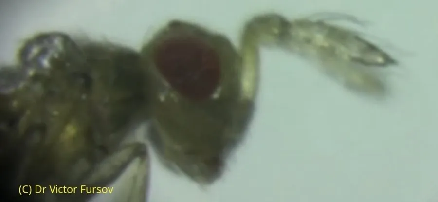

昆虫 · 动物界
赤眼蜂 Trichogramma dendrolimi

体长不足一毫米的微小寄生蜂，复眼红色，把卵产在松毛虫和玉米螟的卵里，是应用最广的生物防治天敌。
- 分类
- 门节肢动物门纲昆虫纲目膜翅目科赤眼蜂科属赤眼蜂属
- 栖息环境
- 松林、玉米田、果园和杂草地，寄生于鳞翅目害虫卵内
- 地理分布
- 中国大部分地区，以及东亚其他地区
- 保护级别
- 尚无保护级别；田间种群受农药使用影响
物种志
赤眼蜂的体长只有零点五至一毫米，是肉眼几乎看不清的微小蜂类，体色黄褐至黑褐，复眼呈鲜红色，赤眼蜂之名由此而来。它的翅膜质，前翅宽大，缘毛长，触角短，雌蜂腹部末端有产卵器，能刺穿寄主卵壳。雄蜂体型略小，触角毛较长。
它分布于中国大部分地区，以及东亚其他地区，栖息在松林、玉米田、果园和杂草地，成虫寿命只有几天，靠寻找寄主卵产卵繁殖。雌蜂把卵产在松毛虫、玉米螟、棉铃虫等鳞翅目害虫的卵内，幼虫在卵内取食发育，把寄主卵吃空后化蛹，羽化时咬破卵壳钻出，一只寄主卵可羽化出数头赤眼蜂。它一年多代，以幼虫或蛹在寄主卵内越冬。中国从上世纪起大规模人工繁殖释放赤眼蜂防治害虫，是生物防治的经典案例，它本身尚无保护级别，田间种群受农药影响。
形态与习性
- 体长仅零点五至一毫米，肉眼难辨
- 识别复眼鲜红色，前翅宽大缘毛长
- 寄主松毛虫、玉米螟、棉铃虫等鳞翅目卵
- 发育幼虫在寄主卵内取食，羽化时咬破卵壳
- 繁殖一年多代，以幼虫或蛹在寄主卵内越冬
- 应用人工繁殖释放，生物防治经典天敌
趣味知识
- 它小到能站在这根针尖上，却是松毛虫最怕的天敌。
- 一只寄主卵里能羽化出好几头赤眼蜂，把卵吃得分毫不剩。
- 田间释放蜂卡，就是让这些小蜂替人消灭害虫的卵。